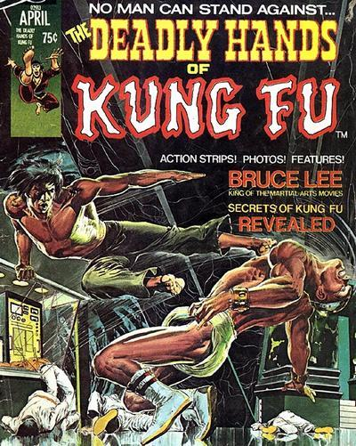
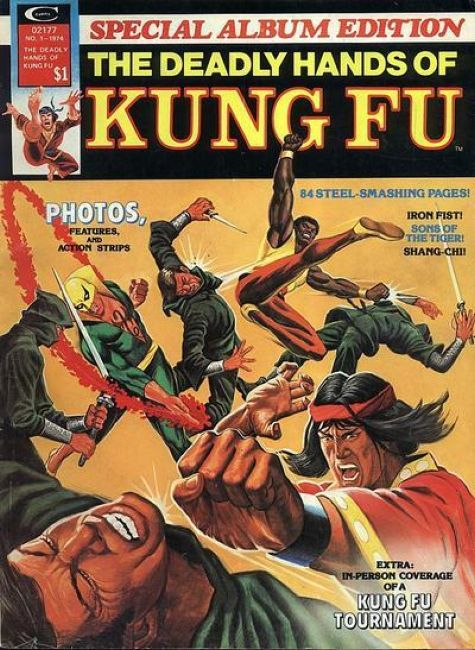

33 issues in 1974 by Marvel
Kung Fu Stories:
- "Shang Chi, the Master of Kung Fu!" Story by Steve Englehart. Art by Jim Starlin and Al Milgrom.
- "Heroes never Die!" An in-depth biography on Bruce Lee by Lorraine Zenka-Smith.
- "What to do Till the Sensei Comes!" A 4-page instructional on the fundamentals of martial arts.
- "Catching a Killer Red Handed!" A movie review of Five Fingers of Death by John David Warner.
- "The Way of the Tiger, the Sign of the Dragon, and the Click of the Neilsens!"
- An article about the TV show Kung Fu, starring David Caradine, by John David Warner.
- "Hai, Karate/Kung Fu Fan." An editorial by Roy Thomas.
- "Fu on You." An editorial by Marv Wolfman.
- "Sons of the Tiger" Story by Gerry Conway. Art by Dick Giordano.
- Poster of Bruce Lee. Black and white.